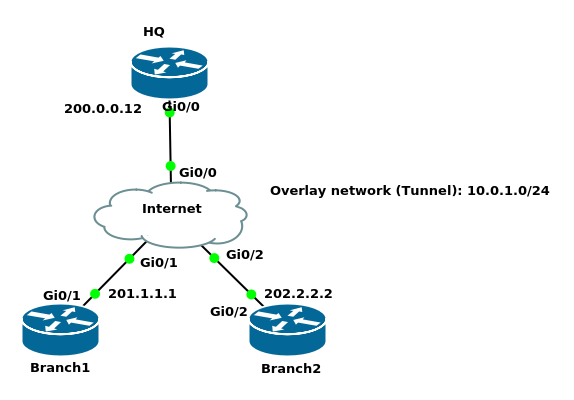

DMVPN Phase 1

hostname HQ ! interface GigabitEthernet0/0 ip address 200.0.0.12 255.255.255.0 ! ip route 201.1.1.0 255.255.255.0 GigabitEthernet0/0 ip route 202.2.2.0 255.255.255.0 GigabitEthernet0/0
hostname Branch1 ! interface GigabitEthernet0/1 ip address 201.1.1.1 255.255.255.0 ! no ip http server no ip http secure-server ip route 200.0.0.0 255.255.255.0 GigabitEthernet0/1 ip route 202.2.2.0 255.255.255.0 GigabitEthernet0/1
hostname Branch2 ! interface GigabitEthernet0/2 ip address 202.2.2.2 255.255.255.0 ! no ip http server no ip http secure-server ip route 200.0.0.0 255.255.255.0 GigabitEthernet0/2 ip route 201.1.1.0 255.255.255.0 GigabitEthernet0/2
hostname Internet ! interface GigabitEthernet0/0 ip address 200.0.0.10 255.255.255.0 ! interface GigabitEthernet0/1 ip address 201.1.1.10 255.255.255.0 ! interface GigabitEthernet0/2 ip address 202.2.2.10 255.255.255.0
DMVPN Phase 1 Configuration
HQ(config)#interface tunnel 0 HQ(config-if)#tunnel mode gre multipoint HQ(config-if)#tunnel source gigabitEthernet 0/0 HQ(config-if)#ip address 10.0.1.12 255.255.255.0 HQ(config-if)#ip nhrp map multicast dynamic HQ(config-if)#ip nhrp network-id 1
- By default, the tunnel mode is GRE point-to-point
- We do not have tunnel destination as in GRE point-to-point, because the tunnel destination will be dynamic
ip nhrp map multicast dynamictells the HQ where to forward the multicast packets to. We used this instead of usingtunnel destinationcommandip nhrp network-idwhen you use multiple DMVPN networks this command would differentiate between them.
Configuring branches is easy as when we configure one branch we can use the configuration as a template for other branches
Branch1(config)#interface Tunnel0 Branch1(config-if)#tunnel source GigabitEthernet0/1 Branch1(config-if)#tunnel destination 200.0.0.12 Branch1(config-if)#ip address 10.0.1.1 255.255.255.0 Branch1(config-if)#ip nhrp map 10.0.1.12 200.0.0.12 Branch1(config-if)#ip nhrp nhs 10.0.1.12 Branch1(config-if)#ip nhrp map multicast 200.0.0.12 Branch1(config-if)#ip nhrp network-id 1
ip nhrp map multicastRouting protocols such as RIP, EIGRP, and OSPF need multicast
HQ#show dmvpn
Legend: Attrb --> S - Static, D - Dynamic, I - Incomplete
N - NATed, L - Local, X - No Socket
T1 - Route Installed, T2 - Nexthop-override
C - CTS Capable
# Ent --> Number of NHRP entries with same NBMA peer
NHS Status: E --> Expecting Replies, R --> Responding, W --> Waiting
UpDn Time --> Up or Down Time for a Tunnel
==========================================================================
Interface: Tunnel0, IPv4 NHRP Details
Type:Hub, NHRP Peers:1,
# Ent Peer NBMA Addr Peer Tunnel Add State UpDn Tm Attrb
----- --------------- --------------- ----- -------- -----
1 201.1.1.1 10.0.1.1 UP 00:04:33 D
HQ#show ip nhrp
10.0.1.1/32 via 10.0.1.1
Tunnel0 created 00:05:41, expire 01:54:18
Type: dynamic, Flags: unique registered nhop
NBMA address: 201.1.1.1
Copy the bold lines of the output, only modify the ip address command and the source interface, then paste it to Branch2
Branch1#show running-config interface tunnel 0 Building configuration... Current configuration : 204 bytes ! interface Tunnel0 ip address 10.0.1.1 255.255.255.0 ip nhrp map multicast 200.0.0.12 ip nhrp network-id 1 ip nhrp nhs 10.0.1.12 tunnel source GigabitEthernet0/1 tunnel destination 200.0.0.12 end
Branch2(config)#interface Tunnel0 Branch2(config-if)# ip address 10.0.1.2 255.255.255.0 Branch2(config-if)# ip nhrp map multicast 200.0.0.12 Branch2(config-if)# ip nhrp network-id 1 Branch2(config-if)# ip nhrp nhs 10.0.1.12 Branch2(config-if)# tunnel source GigabitEthernet0/2 Branch2(config-if)# tunnel destination 200.0.0.12Verification
HQ#show dmvpn
Interface: Tunnel0, IPv4 NHRP Details
Type:Hub, NHRP Peers:2,
# Ent Peer NBMA Addr Peer Tunnel Add State UpDn Tm Attrb
----- --------------- --------------- ----- -------- -----
1 201.1.1.1 10.0.1.1 UP 00:29:04 D
1 202.2.2.2 10.0.1.2 UP 00:00:08 D
HQ#ping 10.0.1.1
Type escape sequence to abort.
Sending 5, 100-byte ICMP Echos to 10.0.1.1, timeout is 2 seconds:
!!!!!
Success rate is 100 percent (5/5), round-trip min/avg/max = 5/6/10 ms
HQ#ping 10.0.1.2
Type escape sequence to abort.
Sending 5, 100-byte ICMP Echos to 10.0.1.2, timeout is 2 seconds:
!!!!!
Success rate is 100 percent (5/5), round-trip min/avg/max = 6/8/11 ms
Now, let us add LANs behind each router and see how different protocols behave in DMVPN Phase 1

HQ(config)#interface gigabitEthernet 0/3 HQ(config-if)#ip address 172.16.0.12 255.255.240.0 HQ(config-if)#no shutdown
Branch1(config)#interface gigabitEthernet 0/3 Branch1(config-if)#ip address 192.168.1.1 255.255.255.0 Branch1(config-if)#no shutdown
Branch2(config)#interface gigabitEthernet 0/3 Branch2(config-if)#ip address 192.168.2.2 255.255.255.0 Branch2(config-if)#no shutdown
RIP configuration
HQ(config)#router rip HQ(config-router)#version 2 HQ(config-router)#network 10.0.1.0 HQ(config-router)#network 172.16.0.0 HQ(config-router)#no auto-summary HQ(config)#interface tunnel 0 HQ(config-if)#no ip split-horizon
Branch1(config)#router rip Branch1(config-router)#version 2 Branch1(config-router)#network 10.0.1.0 Branch1(config-router)#network 192.168.1.0 Branch1(config-router)#no auto-summary
Branch1(config)#router rip Branch1(config-router)#version 2 Branch2(config-router)#network 10.0.1.0 Branch2(config-router)#network 192.168.2.0 Branch2(config-router)#no auto-summaryVerification
HQ#show ip route rip
Gateway of last resort is not set
R 192.168.1.0/24 [120/1] via 10.0.1.1, 00:00:18, Tunnel0
R 192.168.2.0/24 [120/1] via 10.0.1.2, 00:00:27, Tunnel0
HQ#show dmvpn
Interface: Tunnel0, IPv4 NHRP Details
Type:Hub, NHRP Peers:2,
# Ent Peer NBMA Addr Peer Tunnel Add State UpDn Tm Attrb
----- --------------- --------------- ----- -------- -----
1 201.1.1.1 10.0.1.1 UP 00:52:51 D
1 202.2.2.2 10.0.1.2 UP 00:23:55 D
Branch2#show ip route rip
Gateway of last resort is not set
172.16.0.0/20 is subnetted, 1 subnets
R 172.16.0.0 [120/1] via 10.0.1.12, 00:00:05, Tunnel0
R 192.168.1.0/24 [120/2] via 10.0.1.1, 00:00:05, Tunnel0
Branch1#ping 192.168.2.2 source 192.168.1.1 Type escape sequence to abort. Sending 5, 100-byte ICMP Echos to 192.168.2.2, timeout is 2 seconds: Packet sent with a source address of 192.168.1.1 !!!!! Success rate is 100 percent (5/5), round-trip min/avg/max = 7/9/12 ms Branch1#traceroute 192.168.2.2 source 192.168.1.1 Type escape sequence to abort. Tracing the route to 192.168.2.2 VRF info: (vrf in name/id, vrf out name/id) 1 10.0.1.12 8 msec 8 msec 7 msec 2 10.0.1.2 8 msec 8 msec 8 msec
We can see above that everything goes through the HQ as in DMVPN phase 1, branches do not have direct communication in between.
EIGRP Configuration
First let us remove the RIP configuration from HQ, Branch1, and Branch2(config)#no router rip
HQ(config-if)#ip split-horizon
Now, EIGRP configuration
Branch1(config)#router eigrp 12 Branch1(config-router)#network 192.168.1.1 0.0.0.0 Branch1(config-router)#network 10.0.1.1 0.0.0.0
Branch2(config)#router eigrp 12 Branch2(config-router)#network 192.168.2.2 0.0.0.0 Branch2(config-router)#network 10.0.1.2 0.0.0.0
HQ(config)#router eigrp 12
HQ(config-router)#network 172.16.0.12 0.0.0.0
HQ(config-router)#network 10.0.1.12 0.0.0.0
HQ(config-router)#
*Jan 27 04:09:49.545: %DUAL-5-NBRCHANGE: EIGRP-IPv4 1: Neighbor 10.0.1.2 (Tunnel0) is up: new adjacency
*Jan 27 04:09:49.547: %DUAL-5-NBRCHANGE: EIGRP-IPv4 1: Neighbor 10.0.1.1 (Tunnel0) is up: new adjacency
HQ#show ip eigrp neighbors
EIGRP-IPv4 VR(HQ) Address-Family Neighbors for AS(1)
H Address Interface Hold Uptime SRTT RTO Q Seq
(sec) (ms) Cnt Num
1 10.0.1.1 Tu0 10 00:00:46 372 2232 0 4
0 10.0.1.2 Tu0 13 00:00:56 19 1470 0 3
HQ(config)#interface tunnel 0
HQ(config-if)#no ip split-horizon eigrp 12
Branch1#show ip route eigrp
Gateway of last resort is not set
172.16.0.0/20 is subnetted, 1 subnets
D 172.16.0.0 [90/26880256] via 10.0.1.12, 00:02:33, Tunnel0
D 192.168.2.0/24 [90/28160256] via 10.0.1.12, 00:01:22, Tunnel0
Branch2#show ip route eigrp | include 192.168.1.0 D 192.168.1.0/24 [90/28160256] via 10.0.1.12, 00:06:25, Tunnel0
You see that in RIP the next hop was 10.0.1.1 but EIGRP changes the next hop when it advertises networks. In this example because we are configuring DMVPN phase 1, it does not matter. When we use Phase 2, this matters.
Branch2#traceroute 192.168.1.1 source 192.168.2.2 Type escape sequence to abort. Tracing the route to 192.168.1.1 VRF info: (vrf in name/id, vrf out name/id) 1 10.0.1.12 9 msec 8 msec 9 msec 2 10.0.1.1 10 msec 9 msec 8 msec
Since the traffic goes through HQ, there is no point to advertise all networks to our branch routers. Let us configure a default route summary on the HQ router and advertise it toward the branch routers
HQ(config-if)#ip split-horizon eigrp 12 HQ(config-if)#ip summary-address eigrp 12 192.168.0.0 255.255.252.0 *Jan 27 05:08:15.037: %DUAL-5-NBRCHANGE: EIGRP-IPv4 12: Neighbor 10.0.1.2 (Tunnel0) is resync: summary configured *Jan 27 05:08:15.038: %DUAL-5-NBRCHANGE: EIGRP-IPv4 12: Neighbor 10.0.1.1 (Tunnel0) is resync: summary configured
Branch2#show ip route eigrp
Gateway of last resort is not set
172.16.0.0/20 is subnetted, 1 subnets
D 172.16.0.0 [90/26880256] via 10.0.1.12, 00:15:57, Tunnel0
D 192.168.0.0/22 [90/28160256] via 10.0.1.12, 00:02:56, Tunnel0
OSPF Configuration
- OSPF is not the best solution for DMVPN
- It is not scalable when we have dozens of routers
- Branches’ routers usually do not like all the LSA flooding
- One way to reduce the number of prefixes is to use a stub or totally stub area
- We will try each of OSPF network types
- broadcast
- non-broadcast
- point-to-point
- point-to-multipoint
- point-to-multipoint non-broadcast
First let us remove the EIGRP configuration from HQ, Branch1, and Branch2
HQ, Branch1, Branch2(config)#no router eigrp 12 HQ(config)#interface tunnel 0 HQ(config-if)#ip summary-address eigrp 12 192.168.0.0 255.255.252.0
I will configure each of OSPF network types with DMVPN
point-to-point OSPF network type
OSPF basic configuration Branch1router ospf 1 network 10.0.1.1 0.0.0.0 area 0 network 192.168.1.1 0.0.0.0 area 0Branch2
router ospf 1 network 10.0.1.2 0.0.0.0 area 0 network 192.168.2.2 0.0.0.0 area 0HQ
HQ(config)#router ospf 1 HQ(config-router)#network 10.0.1.12 0.0.0.0 area 0 HQ(config-router)#network 172.16.0.12 0.0.0.0 area 0 *Jan 27 16:58:39.437: %OSPF-5-ADJCHG: Process 1, Nbr 202.2.2.2 on Tunnel0 from EXSTART to DOWN, Neighbor Down: Adjacency forced to reset *Jan 27 16:58:39.479: %OSPF-5-ADJCHG: Process 1, Nbr 201.1.1.1 on Tunnel0 from EXSTART to DOWN, Neighbor Down: Adjacency forced to reset
HQ#show ip ospf interface brief Interface PID Area IP Address/Mask Cost State Nbrs F/C Gi0/3 1 0 172.16.0.12/20 1 DR 0/0 Tu0 1 0 10.0.1.12/24 1000 P2P 0/1
The default OSPF network type for tunnel interfaces is point-to-point but we are using point-to-multipoint interfaces in DMVPN. HQ expects one router not two. It keeps establishing and tearing down neighbor adjacencies.
HQ#show ip ospf neighbor Neighbor ID Pri State Dead Time Address Interface 201.1.1.1 0 EXSTART/ - 00:00:39 10.0.1.1 Tunnel0 HQ#show ip ospf neighbor Neighbor ID Pri State Dead Time Address Interface 202.2.2.2 0 EXSTART/ - 00:00:39 10.0.1.2 Tunnel0
So forget about point-to-point network type when working with DMVPN
broadcast OSPF network type
broadcast OSPF network type works very well with DMVPN because it establishes neighbor adjacencies automatically
HQ(config)#interface tunnel 0 HQ(config-if)#ip ospf network broadcast
Branch2(config)#interface tunnel 0 Branch2(config-if)#ip ospf network broadcast Branch2(config-if)#ip ospf priority 0
Branch1(config)#interface tunnel 0 Branch1(config-if)#ip ospf network broadcast Branch1(config-if)#ip ospf priority 0
ip ospf priority 0: since there is no direct communication between branches we do not want them to be elected as DR or BDR
HQ#show ip ospf neighbor Neighbor ID Pri State Dead Time Address Interface 201.1.1.1 0 FULL/DROTHER 00:00:39 10.0.1.1 Tunnel0 202.2.2.2 0 FULL/DROTHER 00:00:38 10.0.1.2 Tunnel0
Branch1#show ip route ospf
Gateway of last resort is not set
172.16.0.0/20 is subnetted, 1 subnets
O 172.16.0.0 [110/1001] via 10.0.1.12, 00:04:05, Tunnel0
O 192.168.2.0/24 [110/1001] via 10.0.1.2, 00:03:40, Tunnel0
Branch1#ping 192.168.2.2 source 192.168.1.1
Type escape sequence to abort.
Sending 5, 100-byte ICMP Echos to 192.168.2.2, timeout is 2 seconds:
Packet sent with a source address of 192.168.1.1
!!!!!
Success rate is 100 percent (5/5), round-trip min/avg/max = 8/9/11 ms
non-broadcast OSPF network type
- non-broadcast OSPF network type works like broadcast with the exception that we have to configure static neighbors
HQ(config-if)#ip ospf network non-broadcast HQ(config)#router ospf 1 HQ(config-router)#neighbor 10.0.1.1 HQ(config-router)#neighbor 10.0.1.2
Branch1 & Branch2(config-if)#ip ospf network non-broadcast Branch1 & Branch2(config)#router ospf 1 Branch1 & Branch2(config-router)#neighbor 10.0.1.12
HQ#show ip ospf neighbor Neighbor ID Pri State Dead Time Address Interface 201.1.1.1 0 FULL/DROTHER 00:01:34 10.0.1.1 Tunnel0 202.2.2.2 0 FULL/DROTHER 00:01:34 10.0.1.2 Tunnel0
HQ#show ip ospf interface brief Interface PID Area IP Address/Mask Cost State Nbrs F/C Gi0/3 1 0 172.16.0.12/20 1 DR 0/0 Tu0 1 0 10.0.1.12/24 1000 DR 2/2
Branch1#ping 192.168.2.2 source 192.168.1.1 Type escape sequence to abort. Sending 5, 100-byte ICMP Echos to 192.168.2.2, timeout is 2 seconds: Packet sent with a source address of 192.168.1.1 !!!!! Success rate is 100 percent (5/5), round-trip min/avg/max = 7/8/11 ms
point-to-multipoint OSPF network type
point-to-multipoint OSPF network type also works very well.
Let us remove the configuration of non-broadcast network and configure the point-to-multipoint network. We no longer need to worry about the priority of branches as there is no DR/BDR election. We also no longer need to worry about adding adjacencies in HQ as with point-to-multipoint adjacencies are formed automatically.HQ(config)#router ospf 1 HQ(config-router)#no neighbor 10.0.1.1 HQ(config-router)#no neighbor 10.0.1.2 HQ(config-if)#ip ospf network point-to-multipoint
Branch1(config)#router ospf 1 Branch1(config-router)#no neighbor 10.0.1.12 Branch1(config-if)#ip ospf network point-to-multipoint
Branch2(config)#router ospf 1 Branch2(config-router)#no neighbor 10.0.1.12 Branch2(config-if)#ip ospf network point-to-multipoint *Jan 27 18:47:41.280: %OSPF-5-ADJCHG: Process 1, Nbr 200.0.0.12 on Tunnel0 from LOADING to FULL, Loading Done
HQ#show ip ospf neighbor Neighbor ID Pri State Dead Time Address Interface 201.1.1.1 0 FULL/ - 00:01:53 10.0.1.1 Tunnel0 202.2.2.2 0 FULL/ - 00:01:58 10.0.1.2 Tunnel0
- No DR/BDR election anymore
Branch1#show ip route ospf Gateway of last resort is not set 10.0.0.0/8 is variably subnetted, 4 subnets, 2 masks O 10.0.1.2/32 [110/2000] via 10.0.1.12, 00:05:03, Tunnel0 O 10.0.1.12/32 [110/1000] via 10.0.1.12, 00:05:48, Tunnel0 172.16.0.0/20 is subnetted, 1 subnets O 172.16.0.0 [110/1001] via 10.0.1.12, 00:05:48, Tunnel0 O 192.168.2.0/24 [110/2001] via 10.0.1.12, 00:05:03, Tunnel0As we can see, Branch1, to reach Branch2, points to the HQ router, which is not an issue when dealing with DMVPN phase 1 but is an issue in phase 2.
point-to-multipoint non-broadcast OSPF network type
- Like point-to-multipoint OSPF network but we have to configure static neighbors
BGP Configuration
I removed all OSPF configuration. Let us now configure BGP
eBGP with different AS on branches
HQ(config)#router bgp 64500 HQ(config-router)#neighbor 10.0.1.1 remote-as 64501 HQ(config-router)#neighbor 10.0.1.2 remote-as 64502 HQ(config-router)#network 172.16.0.0 mask 255.255.240.0
Branch1(config)#router bgp 64500 Branch1(config-router)#neighbor 10.0.1.12 remote-as 6500 *Jan 27 19:40:33.274: %BGP-5-ADJCHANGE: neighbor 10.0.1.12 Up Branch1(config-router)#network 192.168.1.0 mask 255.255.255.0
Branch2(config)#router bgp 64502 Branch2(config-router)#neighbor 10.0.1.12 remote-as 64500 *Jan 27 19:39:37.173: %BGP-5-ADJCHANGE: neighbor 10.0.1.12 Up Branch2(config-router)#network 192.168.2.0 mask 255.255.255.0
HQ#show bgp ipv4 unicast summary
Neighbor V AS MsgRcvd MsgSent TblVer InQ OutQ Up/Down State/PfxRcd
10.0.1.1 4 64501 7 7 4 0 0 00:02:14 1
10.0.1.2 4 64502 5 9 4 0 0 00:01:09 1
HQ#show bgp ipv4 unicast
Network Next Hop Metric LocPrf Weight Path
*> 172.16.0.0/20 0.0.0.0 0 32768 i
*> 192.168.1.0 10.0.1.1 0 0 64501 i
*> 192.168.2.0 10.0.1.2 0 0 64502 i
Branch1#show ip route bgp
Gateway of last resort is not set
172.16.0.0/20 is subnetted, 1 subnets
B 172.16.0.0 [20/0] via 10.0.1.12, 00:03:12
B 192.168.2.0/24 [20/0] via 10.0.1.2, 00:01:37
Branch1#ping 192.168.2.2 source 192.168.1.1
Type escape sequence to abort.
Sending 5, 100-byte ICMP Echos to 192.168.2.2, timeout is 2 seconds:
Packet sent with a source address of 192.168.1.1
!!!!!
Success rate is 100 percent (5/5), round-trip min/avg/max = 6/7/9 ms
eBGP with same AS on branches
HQ(config)#router bgp 64500 HQ(config-router)#no neighbor 10.0.1.1 remote-as 64501 HQ(config-router)#no neighbor 10.0.1.2 remote-as 64502 HQ(config-router)#neighbor 10.0.1.1 remote-as 64512 HQ(config-router)#neighbor 10.0.1.2 remote-as 64512
Branch1(config)#router bgp 64512 Branch1(config-router)#neighbor 10.0.1.12 remote-as 64500 Branch1(config-router)#network 192.168.1.0 mask 255.255.255.0
Branch2(config)#router bgp 64512 Branch2(config-router)#neighbor 10.0.1.12 remote-as 64500 Branch2(config-router)#network 192.168.2.0 mask 255.255.255.0As we can see below Branch1 and Branch2 do not accept routes from the other branch since they have AS 64512 in their BGP topology AS Path.
HQ#show ip bgp neighbors 10.0.1.2 advertised-routes
Network Next Hop Metric LocPrf Weight Path
*> 172.16.0.0/20 0.0.0.0 0 32768 i
*> 192.168.1.0 10.0.1.1 0 0 64512 i
*> 192.168.2.0 10.0.1.2 0 0 64512 i
Total number of prefixes 3
HQ#show ip bgp neighbors 10.0.1.1 advertised-routes
Network Next Hop Metric LocPrf Weight Path
*> 172.16.0.0/20 0.0.0.0 0 32768 i
*> 192.168.1.0 10.0.1.1 0 0 64512 i
*> 192.168.2.0 10.0.1.2 0 0 64512 i
Total number of prefixes 3
Branch1#show ip route bgp
Gateway of last resort is not set
172.16.0.0/20 is subnetted, 1 subnets
B 172.16.0.0 [20/0] via 10.0.1.12, 01:15:23
Branch2#show ip route bgp
Gateway of last resort is not set
172.16.0.0/20 is subnetted, 1 subnets
B 172.16.0.0 [20/0] via 10.0.1.12, 01:15:12
But let us configure the HQ to advertise a default route to our branches
HQ(config)#ip route 0.0.0.0 0.0.0.0 null 0 HQ(config)#router bgp 64500 HQ(config-router)#network 0.0.0.0 mask 0.0.0.0
Branch1#show ip route bgp
Gateway of last resort is 10.0.1.12 to network 0.0.0.0
B* 0.0.0.0/0 [20/0] via 10.0.1.12, 00:02:20
172.16.0.0/20 is subnetted, 1 subnets
B 172.16.0.0 [20/0] via 10.0.1.12, 01:28:57
Branch1#ping 192.168.2.2 source 192.168.1.1
Type escape sequence to abort.
Sending 5, 100-byte ICMP Echos to 192.168.2.2, timeout is 2 seconds:
Packet sent with a source address of 192.168.1.1
!!!!!
Success rate is 100 percent (5/5), round-trip min/avg/max = 6/9/12 ms
HQ#show ip bgp neighbors 10.0.1.1 advertised-routes
Network Next Hop Metric LocPrf Weight Path
*> 0.0.0.0 0.0.0.0 0 32768 i
*> 172.16.0.0/20 0.0.0.0 0 32768 i
*> 192.168.1.0 10.0.1.1 0 0 64512 i
*> 192.168.2.0 10.0.1.2 0 0 64512 i
Total number of prefixes 4
Branch2#show ip bgp
Network Next Hop Metric LocPrf Weight Path
*> 0.0.0.0 10.0.1.12 0 0 64500 i
*> 172.16.0.0/20 10.0.1.12 0 0 64500 i
*> 192.168.2.0 0.0.0.0 0 32768 i
iBGP with dynamic peers
- With eBGP we configured neighbors manually which defeats the purpose of having dynamic DMVPN branch routers
- BGP supports dynamic peers which means HQ will accept a BGP neighbor adjacency from any router in a given range
- Can be used for both eBGP and iBGP but the remote routers have to be in the same AS
- I configure here iBGP with dynamic peers
HQ(config)#no router bgp 64500
Branch1(config)#no router bgp 64512
Branch2(config)#no router bgp 64512Configuration
HQ(config)#router bgp 64500 HQ(config-router)#bgp listen range 10.0.1.0/24 peer-group DMVPN_BRANCHES HQ(config-router)#neighbor DMVPN_BRANCHES peer-group HQ(config-router)#neighbor DMVPN_BRANCHES remote-as 64500 HQ(config-router)#network 0.0.0.0 mask 0.0.0.0
Branch1(config-router)#neighbor 10.0.1.12 remote-as 64500 Branch1(config-router)#network 192.168.1.0 mask 255.255.255.0
Branch2(config)#router bgp 64500 Branch2(config-router)#neighbor 10.0.1.12 remote-as 64500 Branch2(config-router)#network 192.168.2.0 mask 255.255.255.0
Branch1#ping 192.168.2.2 source 192.168.1.1 Type escape sequence to abort. Sending 5, 100-byte ICMP Echos to 192.168.2.2, timeout is 2 seconds: Packet sent with a source address of 192.168.1.1 !!!!! Success rate is 100 percent (5/5), round-trip min/avg/max = 8/9/11 ms
Branch1#show ip bgp
BGP table version is 3, local router ID is 201.1.1.1
Status codes: s suppressed, d damped, h history, * valid, > best, i - internal,
r RIB-failure, S Stale, m multipath, b backup-path, f RT-Filter,
x best-external, a additional-path, c RIB-compressed,
Origin codes: i - IGP, e - EGP, ? - incomplete
RPKI validation codes: V valid, I invalid, N Not found
Network Next Hop Metric LocPrf Weight Path
*>i 0.0.0.0 10.0.1.12 0 100 0 i
*> 192.168.1.0 0.0.0.0 0 32768 i
HQ#show ip bgp summary BGP router identifier 200.0.0.12, local AS number 64500 Neighbor V AS MsgRcvd MsgSent TblVer InQ OutQ Up/Down State/PfxRcd *10.0.1.1 4 64500 11 12 4 0 0 00:06:24 1 *10.0.1.2 4 64500 7 9 4 0 0 00:03:24 1 * Dynamically created based on a listen range command Dynamically created neighbors: 2, Subnet ranges: 1 BGP peergroup DMVPN_SPOKES listen range group members: 10.0.1.0/24 Total dynamically created neighbors: 2/(100 max), Subnet ranges: 1
Advantage of iBGP in combination with DMVPN: no need for route filtering on HQ. Because of iBGP split-horizon, HQ will not advertise any networks from branches to the other.
HQ#show ip bgp neighbors 10.0.1.2 advertised-routes
Network Next Hop Metric LocPrf Weight Path *> 0.0.0.0 0.0.0.0 0 32768 i